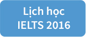

<!DOCTYPE html>
<html>
  <head>
    <meta charset="utf-8">
    <!-- <script src="libs/angular.min.js"></script>
    <script src="libs/angular-ui-router.min.js"></script> -->
    <link rel="stylesheet" href="style.css" />
    <title>Angular App</title>
  </head>
  <body>
    <div class="title">
      <div class="logo">
        <a href="">
          
        </a>
      </div>
      <div class="header">
        <p class="header">LỊCH HỌC IELTS</p>
      </div>
      <div class="btn">
        <button class="register_now">ĐĂNG KÝ NGAY</button>
      </div>
    </div>
    <div class="body">
      <div class="banner">
        <button class="btn_banner">ĐĂNG KÝ NGAY</button>
        <button class="show_down"></button>
      </div>
      <div class="body_1">
        <h1>HỌC IELTS - TẠI SAO CHỌN ILIAT?</h1>
        <p class="slogan">ILIAT - Sự lựa chọn đầu tiên và tốt nhất đưa bạn đến những trường đại học kinh doanh hàng đầu thế giới</p>
        <div class="body_include">
        <div class="group2">
          
          <p class="info">300+ học viên đã tốt nghiệp tại ILIAT với đạt thành tích cao:</br>
            <strong>60.2%  đạt 7.0; >70% học viên đạt 6.5.</strong></br>
            Họ đã thành công, bạn cũng thế!
          </p>
        </div>
        <div class="group2">
          
          <p class="info">ILIAT luôn lấy chất lượng học viên làm hàng đầu! Ở đây, sau mỗi khóa học, đội ngũ giảng viên luôn cải tiến giáo trình và phương pháp dạy. Các bạn sẽ được làm quen với mô hình kết hợp đa chiều Học - Ôn - Luyện.<br>
Có gì mới ở mô hình này?</br>
	- <strong>Học</strong>: Các lớp học được thiết kế với không khí tranh luận sôi động, thoải mái đảm bảo bạn có thể tiếp thu toàn diện kiến thức sau mỗi buổi học.<br>
  - <strong>Ôn</strong>: Phương pháp "nhóm tự ôn" có giảng viên hỗ trợ giúp bạn ôn tập lại kiến thức, giải quyết triệt để bài tập; rèn luyện kỹ năng đọc xuyên suốt khóa học<br>
	- <strong>Luyện</strong>: Test liên tục theo phương pháp "nghiền nát". Giúp bạn xóa tan mọi áp lực thời gian và tâm lí phải đối mặt trong kỳ thi thực tế. Sau mỗi lần, trợ giảng sẽ chữa đề và hướng dẫn cẩn thận.
          </p>
        </div>
        <div class="group2">
          
          <p class="info">
            ILIAT luôn hỗ trợ bạn tối đa!</br>
  - ILIAT tặng bạn khóa học Pronounciation đối với học viên đăng ký sớm.</br>
	- Đội ngũ giảng viên và chăm sóc sẵn sàng hỗ trợ 1-1 khi học viên cần! </br>
	- Tư vấn 1-1 "chiến thuật phòng thi" với học viên sắp bước vào kỳ thi.</br>
	- Sử dụng cơ sở miễn phí vật chất tại ILIAT dành cho các "nhóm tự ôn".</br>
          </p>
        </div>
      </div>
      </div>
      <div class="body_2">
        <h1>ĐỘI NGŨ GIẢNG VIÊN ILIAT</h1>
        <div class="body_include">
        <div class="group">
          
          <h2 class="name">NGUYỄN THANH TÙNG</h2>
          <p class="bio"> IELTS 8.5 - Speaking: 8.5, Listening: 9.0</br>
- Kinh nghiệm 2 năm giảng dạy IELTS và Tiếng Anh. Sống và học tập 7 năm tại Mỹ</br>
- Cử nhân xuất sắc chuyên ngành Kinh tế Đại học California, Santa Barbara.</br>
- Kiểm toán viên tại Ernst &amp Young Vietnam.</p>
        </div>
        <div class="group">
          
          <h2 class="name">NGUYỄN HẢI VÂN</h2>
          <p class="bio"> - IELTS 8.0 - Speaking: 8.0, Reading: 9.0</br>
- 2 năm kinh nghiệm giảng dạy IELTS và Tiếng Anh. Sống và học tập 7 năm Tại Anh</br>
- Học viên xuất sắc bậc học A Level tại CATS Cambridge Arts &amp Science UK</br>
- Thành tích học viên: 1 học viên 7.5, 5 học viên 7.0 IELTS</p>
        </div>
        <div class="group">
          
          <h2 class="name">PHẠM QUANG MINH</h2>
          <p class="bio"> - IELTS 8.0 - Speaking: 8.0, Reading: 9.0</br>
- 3 năm kinh nghiệm giảng dạy IELTS.</br>
Sống và học tập 4 năm tại Singapore</br>
- Học bổng A*Star toàn phần du học tại Singapore</p>
        </div>
      </div>
      </div>
      <div class="body_1">
        <h1>HỌC TẠI ILIAT NHƯ THẾ NÀO?</h1>
        <p class="slogan">Lộ trình tinh gọn. Hiệu quả cao. Chi phí thấp. Học là (đam) "mê"!</p>
        <div class="schedule">
          
          <button class="show_schedule"></button>
          <p class="slogan question">Học IELTS tại ILIAT</p>
          <div class="body_1_2">
          <div class="group3">
            
            <p>Thi thử </br>Phỏng vấn đầu vào</p>
          </div>
          <div class="group3">
            
          <p>Học và rèn luyện nghiêm túc, hiệu quả</p>
        </div>
          <div class="group3">
            
          <p>Thử thách với các bài mock test</p>
        </div>
      </div>
        </div>
      </div>
      <div class="body_2">
        <h1>LỚP HỌC NÀO PHÙ HỢP NHẤT</h1>
        <div class="group groupplus">
          <h2 class="title">IELTS EXPRESS (4.0 - 5.5+)</h2>
          <div class="bio"><h3>4.500.000 VNĐ</h3>
            <p>
              Dành cho học viên mới bắt đầu.
Cải thiện từ vựng, ngữ pháp, ngữ âm và tiếp cận 4 kỹ năng ở mức độ cơ bản.
            <span class="bio">
            <strong>Writing</strong></br>
            Luyện tập ngữ pháp và từ vựng theo 12 chủ đề</br>
            Luyện lên dàn ý, viết cấp độ đoạn văn
            </span>
            <span class="bio">
            <strong>Listening</strong></br>
            Luyện nghe bản tin hội thoại ngắn, làm quen với các dạng Listening cơ bản
            </span>
            <span class="bio">
            <strong>Speaking</strong></br>
            Nắm vững quy tắc phát âm căn bản
            </span>
            <span class="bio">
            <strong>Reading</strong></br>
            Luyện đọc với các dạng bài đọc đơn giản.</p>
            </span>
          </div>
          <div class="register"><p>GHI DANH VÀO HỌC</p></div>
        </div>
        <div class="group groupplus">
          <h2 class="title">IELTS MASTER (5.0 - 6.5+)</h2>
          <div class="bio"><h3>5.300.000 VNĐ</h3>
            <p>
            Dành cho học viên chưa có kiến thức sâu về IELTS, mong muốn hoàn thiện kiến thức và nắm chắc phương pháp làm bài IELTS.
            <span class="bio">
            <strong>Writing</strong></br>
            Luyện lên bố cục, phát triển ý cho cả 2 task Writing, trang bị collocations, idioms.
            </span>
            <span class="bio">
            <strong>Listening</strong></br>
            Luyên nghe nâng cao bản tin hội thoại ngắn
            </span>
            <span class="bio">
            <strong>Speaking</strong></br>
            Hoàn thiện phát âm , ngữ điệu và luyện 3 part Speaking với topic nâng cao
            </span>
            <span class="bio">
            <strong>Reading</strong></br>
            Luyện đọc tất cả các dạng Reading cấp độ trung bình</p>
            </span>
          </div>
          <div class="register"><p>GHI DANH VÀO HỌC</p></div>
        </div>
        <div class="group groupplus">
          <h2 class="title">IELTS MASTER+ (6.0 - 7.0+)</h2>
          <div class="bio"><h3>5.800.000 VNĐ</h3>
            <p>
              Dành cho học viên có trình độ cao và mong muốn cải thiện đặc biệt là các kĩ năng chủ động (Writing và Speaking) trước khi thi IELTS.
            <span class="bio">
            <strong>Writing + Speaking</strong></br>
            Chuyên sâu 2 kỹ năng Writing &amp Speaking hướng đến band 7.0+: Luyện kỹ năng nâng cao, hoàn thiện bố cục, làm chủ vốn từ vựng học thuật 10 chủ điểm khó, sử dụng hiệu quả collocations, idioms.
            </span>
            <span class="bio">
            <strong>Listening + Reading</strong></br>
            Luyên nghe nâng cao bản tin hội thoại ngắn
            </span>
            <span class="bio">
            <strong>Speaking</strong></br>
            Hoàn thiện phát âm , ngữ điệu và luyện 3 part Speaking với topic nâng cao
            </span>
            <span class="bio">
            <strong>IELTS Mock Test</strong></br>
            Luyện đọc tất cả các dạng Reading cấp độ trung bình</p>
            </span>
          </div>
          <div class="register"><p>GHI DANH VÀO HỌC</p></div>
        </div>
        <p class="slogan question">Chương trình đặc biệt hè này! Nhận học bổng ngay sau phỏng vấn? Tại sao không?</p>
        <button class="register_now scholarship">Tôi đăng ký nhận học bổng</button><button class="register_now scholarship noscholarship">Không, tôi không muốn nhận học bổng...</button>
      </div>
    </div>
  </body>
</html>
